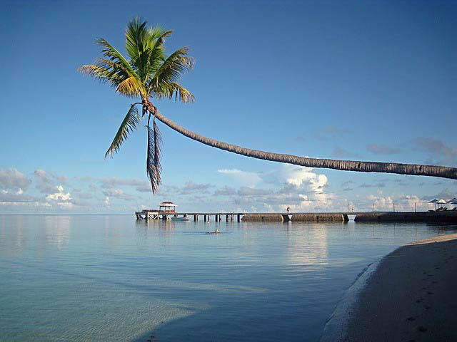

WEIJiJi
关于威基基
你与世界只有一个威基基的距离，最美风景，最佳体验，最热故事，都在威基基旅行。

我们的威基基（Weijiji）
威基基是旅游组织向公众展示旅游信息的平台，有官方威基基站，也有私人威基基站，官方的侧重政务，私人的侧重旅游市场及宣传，向广大旅游朋友提供旅游相关信息资讯、产品等信息。 威基基对于旅客：威基基是有个旅行社制作而成，是为了提供旅游信息给旅客，旅客可以通过搜索得知旅行社-旅游路线-旅游价格的等相关旅游知识和，因为旅游景点的不同，所以个旅游景点都有相关安全知识，它也可以从威基基上获悉。威基基对于旅行社：建成威基基的旅行社，通过发布各种相关旅游信息，旅游线路供游客选择，不仅为旅客提供了服务，而且也推广了自己，让更多旅客了解自己。中国的威基基在1996年开始出现。旅游是大众趋势，互联网已经成为最大的传媒之一，因此威基基发展速度非常快，每年都有成千上万家威基基站出现，截至2012年底具有一定旅游资讯能力的威基基有5000多家，其中专业威基基300余家。